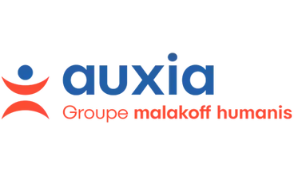
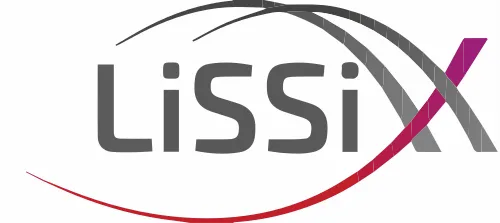

BUT Informatique · IUT d’Orsay
Formation à Paris-Saclay, actuellement en troisième année. Projets web, logiciels, bases de données, systèmes et travail d’équipe.
Parcours
Après un début en santé puis en mesures physiques, j’ai trouvé dans le BUT Informatique un terrain qui mélange logique, construction concrète et créativité.
Formation à Paris-Saclay, actuellement en troisième année. Projets web, logiciels, bases de données, systèmes et travail d’équipe.
Stage de cinq mois chez Auxia, dans la même équipe que le stage précédent, pour approfondir les missions de développement et consolider les compétences acquises en BUT Informatique.
Stage d’un mois dans un environnement de recherche technique, autour des images, signaux et systèmes intelligents.
Stage de trois mois en développement logiciel. Découverte d’un contexte professionnel, des méthodes de travail en entreprise et de l’importance d’un code clair, fiable et maintenable.
Gestion de rayons, contact client et encaissement. Une expérience utile pour renforcer l’autonomie, l’organisation et l’adaptation rapide.
Découverte du monde professionnel avec des missions d’aide en vente et en cuisine, dans un cadre rythmé par le service et le travail d’équipe.
Passage par une formation scientifique appliquée avant l’orientation définitive vers l’informatique.
Spécialités mathématiques et physique-chimie, option mathématiques expertes.
Une progression concrète entre développement, laboratoire, service client et découverte du monde professionnel.

AuxiaAuxia, Malakoff Humanis. Deuxième stage dans la même équipe, avec plus de continuité, d’autonomie et de pratique sur des missions de développement concrètes.

LISSILaboratoire Images, Signaux & Systèmes Intelligents. Stage d’un mois dans un cadre technique et scientifique lié aux images, aux signaux et aux systèmes intelligents.
Auxia, Malakoff Humanis. Première immersion en développement, avec rigueur, compréhension du contexte métier et maintenance du code.
Monoprix, Antony. Gestion de rayon, caisse, relation client et organisation dans un environnement rapide.
Boulangerie Paul, Antony. Première découverte du monde professionnel, de la vente, de l’aide en cuisine et du travail d’équipe.
Un socle encore en évolution, mais déjà assez large pour relier développement, données, interfaces et systèmes.